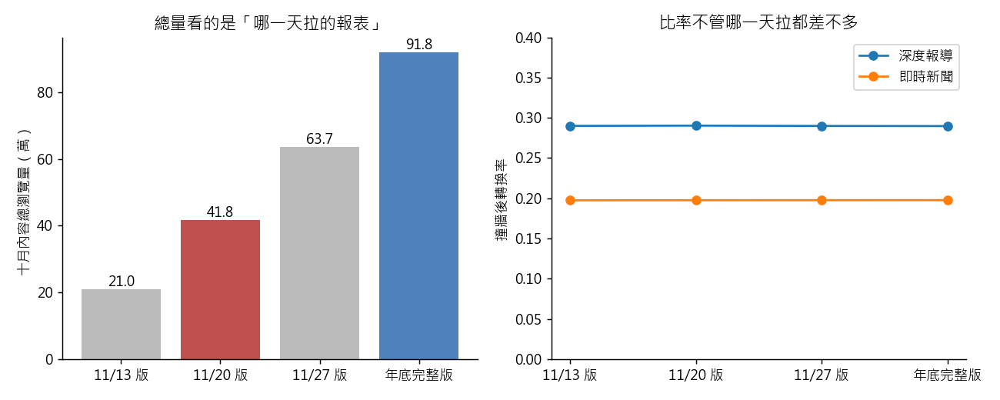

練習 19 - 月中報表與年底報表對不起來
在本單元中，會介紹第 19 題背後的商業問題、它練的是哪一種資料分析，以及從資料到結論的完整做法、程式與圖表。建議先回 Hub - 資料分析練習案例庫 自己試著做一次，再來對照這一頁。
有人會這樣問你
11 月 20 日那場月中檢討會，我們報出 10 月深度報導帶了多少訂閱；12 月再拉一次同一份報表，數字整個變了。哪一次才是對的？以後開會前我要怎麼知道手上的資料夠不夠？
用到的資料：content_monthly_flat（L1 的 content_monthly_2024_10.csv）、content（L2，要交叉核對版面與作者時才用）、content_monthly（L2）、dim_section（L2）
對應單元：時間序列 明天的流量會怎樣（前視偏誤）＋模型看起來太準 就是出事了
這一題在商業上要回答什麼
經營會議上的數字，常常在不同時間拉的報表之間打架。先弄清楚一份報表是「哪一天看到的資料」，才知道哪些結論（總量）會變、哪些結論（比率）可以放心引用。
這一題練的是哪一種資料分析
這一題練的是資料時點（as-of）與資料治理：同一個查詢在不同截止日會得到不同答案，所以分析要記錄資料版本。累積量指標和比率指標對資料晚到的敏感度不一樣，引用之前要先分清楚。
一步一步怎麼做
- 用 ingest_ts 把報表倒帶：只留 ingest_ts ≤ 2024-11-20 的列，重建那天倉儲裡真正看得到的版本。
- 同一套計算分別跑「11/20 版」與「完整版」，比兩類指標：一是總量型（總瀏覽量、總轉換數），二是比率型（各型態的 conversion_cnt ÷ paywall_hit_cnt，以及深度報導對即時新聞的 log-odds 差）。
- 最後做一次反面示範：把資料字典標成「事後回填」的 total_pv_lifetime 丟進一個預測 pv 的模型，看準確度會變得多好看。
工具怎麼選 用 Python 的理由：這題要拿不同的截止日反覆切出不同版本再跑同一套計算，把它寫成一個吃「截止日」參數的函式最省事，pandas 一行就能做時間篩選。
看完整程式（Python）
from _kmg import *
raw = flat()
def version(cut):
d = raw if cut is None else raw[raw["ingest_ts"] <= pd.Timestamp(cut)]
return dedupe(d)
def metrics(d):
g = d.groupby("content_type")"paywall_hit_cnt", "conversion_cnt".sum()
cr = g["conversion_cnt"] / g["paywall_hit_cnt"]
lo = np.log(cr["feature"] / (1 - cr["feature"])) - np.log(cr["news"] / (1 - cr["news"]))
return {"n": len(d), "pv": int(d["pv"].sum()), "conv": int(d["conversion_cnt"].sum()),
"cr_feature": float(cr["feature"]), "cr_news": float(cr["news"]), "logodds": float(lo)}
full = metrics(version(None))
cands = {"00:00": "2024-11-20 00:00:00", "23:59": "2024-11-20 23:59:59"}
vers = {k: metrics(version(v)) for k, v in cands.items()}
pick = min(vers, key=lambda k: abs(vers[k]["n"] - 673))
m20 = vers[pick]
print("「ingest_ts ≤ 2024-11-20」有兩種讀法：當天 00:00 得 %d 則、當天 23:59 得 %d 則；這裡用 %s" % ( vers["00:00"]["n"], vers["23:59"]["n"], pick))
print("11/20 版則數", m20["n"])
print("11/20 版佔全部比例", m20["n"] / full["n"])
d20 = version(cands[pick])
print("11/20 版最晚發布日在 10/16 以前", bool(d20["publish_at"].max() < pd.Timestamp("2024-10-17")))
lag = (raw["ingest_ts"] - raw["publish_at"]).dt.days
print("入庫時間是發布後 35 天", bool(lag.between(34, 35).mean() > 0.99))
print("11/20 版總瀏覽量（萬）", m20["pv"] / 1e4)
print("完整版總瀏覽量（萬）", full["pv"] / 1e4)
print("11/20 版總轉換", m20["conv"])
print("完整版總轉換", full["conv"])
print("深度報導撞牆轉換率 11/20 版", m20["cr_feature"])
print("深度報導撞牆轉換率 完整版", full["cr_feature"])
print("即時新聞撞牆轉換率 11/20 版", m20["cr_news"])
print("即時新聞撞牆轉換率 完整版", full["cr_news"])
print("log-odds 差 11/20 版", m20["logodds"])
print("log-odds 差 完整版", full["logodds"])
f = dedupe(raw)
print("log(total_pv_lifetime) 與 log(pv) 相關", float(np.corrcoef(np.log(f["total_pv_lifetime"]), np.log(f["pv"]))[0, 1]))
suffix = " 00:00:00" if pick == "00:00" else " 23:59:59"
cuts = ["2024-11-13", "2024-11-20", "2024-11-27"]
week = {c: metrics(version(c + suffix)) for c in cuts}
pvs = [week[c]["pv"] for c in cuts]
crs = [round(week[c]["cr_feature"], 3) for c in cuts]
mono, flat_ = pvs == sorted(pvs), max(crs) - min(crs) < 0.02
labels = ["11/13 版", "11/20 版", "11/27 版", "年底完整版"]
seq = [week[c] for c in cuts] + [full]
fig, ax = plt.subplots(1, 2, figsize=(10, 4))
ax[0].bar(labels, [m["pv"] / 1e4 for m in seq], color=["#bbbbbb", "#c0504d", "#bbbbbb", "#4f81bd"])
for i, m in enumerate(seq):
ax[0].text(i, m["pv"] / 1e4, "%.1f" % (m["pv"] / 1e4), ha="center", va="bottom")
ax[0].set_ylabel("十月內容總瀏覽量（萬）")
ax[0].set_title("總量看的是「哪一天拉的報表」")
ax[1].plot(labels, [m["cr_feature"] for m in seq], marker="o", label="深度報導")
ax[1].plot(labels, [m["cr_news"] for m in seq], marker="o", label="即時新聞")
ax[1].set_ylim(0, 0.4)
ax[1].set_ylabel("撞牆後轉換率")
ax[1].set_title("比率不管哪一天拉都差不多")
ax[1].legend()
save_fig(fig, "ex19_asof.png")
程式開頭的 from _kmg import * 載入共用的讀檔、去重、換幣別與畫圖函式，內容放在 練習 01 - 月會上的則數對不對。
結果會看到什麼
11/20 那天倉儲裡只有 673 則（46.8%），而且缺的完全不是隨機的——入庫時間是發布後 35 天，所以 10/16 以後發的稿一則都還沒進來。總量型指標整個腰斬（總瀏覽量 41.8 萬對 91.8 萬、總轉換 6,260 對 14,463），但比率型指標幾乎不動（深度報導的撞牆轉換率 0.290 對 0.290、即時新聞 0.198 對 0.198，log-odds 差兩次都是 0.50）。另一邊，加了 total_pv_lifetime 的模型會把 pv 預測得好得不像話（兩者取對數後相關係數 0.99），因為那一欄是事後回填、裡面包含了統計月份之後才發生的事。
- 「ingest_ts ≤ 2024-11-20」有兩種讀法：當天 00:00 得 673 則、當天 23:59 得 728 則；這裡用 00:00
圖怎麼讀

左圖是在不同日期拉同一份十月報表得到的總瀏覽量，右圖是同一批報表算出的撞牆後轉換率。總量隨拉報表的日期一路變大，比率幾乎不動。繼續練習
上一題 練習 18 - 廣告活動能跑多久，或回到 Hub - 資料分析練習案例庫 挑別的題目。
學生版｜更新於 2026-09-13 11:59